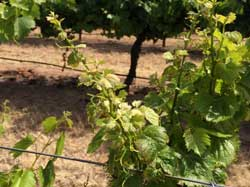
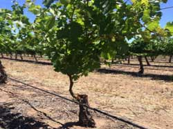
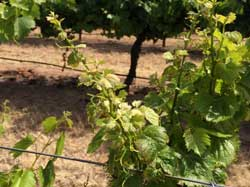
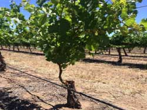

Cumulative Discounted Net Returns: The cumulative net returns (returns − costs) per acre over 25 years for a healthy vineyard, an untreated infected vineyard, and infected vineyards where action is taken. Current and future dollar amounts are in 2013 dollars and are discounted to 2013 using a 3% discount rate.
Change in Cumulative Discounted Net Returns: The change in cumulative net returns (returns − costs) per acre over 25 years for an infected vineyard relative to no action in an infected vineyard. Current and future dollar amounts are in 2013 dollars and are discounted to 2013 using a 3% discount rate.
Annual Average Discounted Net Benefits: The change in cumulative discounted net returns (returns − costs) divided by 25 years. Current and future dollar amounts are in 2013 dollars and are discounted to 2013 using a 3% discount rate.
Last Year of Profitable Annual Net Returns: The last year an infected vineyard generates positive annual net returns (returns − costs). This year is the same for discounted and nominal net returns.
Age Adoption Pays Off: The age when net returns (returns − costs) for a treated infected vineyard exceed those from an untreated infected vineyard.